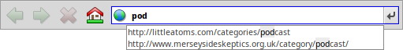

日本語
日本語 Français
Français Deutsch
Deutsch Italiano
Italiano Русский
Русский Español
Español Svenska
Svenska Українська
Українська 中文 ［中文］
中文 ［中文］ Português
Português Suomi
Suomi Slovenčina
Slovenčina English
English WebPositive
WebPositive
| Deskbar メニュー： | ||
| 場所： | /boot/system/apps/WebPositive | |
| 設定ファイル： | ~/config/settings/WebPositive/ - 設定ファイル、クッキー、キャッシュやブラウザ履歴 | |
| ~/config/settings/WebPositive/Bookmarks - 統一されたブックマークファイル |
WebPositiveまたは略してWeb+はHaikuのネイティブウェブブラウザーです。名前の一部はBeOSのシンプルなNetPositiveやWebKitとよばれるNetPositiveの動作エンジンから由来しています。このオープンソースの HTML レンダリングライブラリは、 Mac OS X の Safari や Google の Google Chrome など、主流ブラウザにも使用されています。毎日進化を続ける WebKit を使用することで、Web+は 新しいウェブ技術に対応することができます。

WebPositiveのインターフェースは簡単です：メニューの下にバーがあり、ボタンで履歴の前や次のサイトに行ったり、ページのロードを中止したり、スタートページにジャンプできます。
その下にはURLを入力するロケーターフィールドがあります。
ナビゲーションバーの下はウェブページです。タブを開くことでたくさんのページを同時に開くことが可能です。
ウィンドウの下はステータスバーです。マウスが指しているリンクのURLを表示します。ページをロード中のときは進捗バーが右に表示されます。
 設定 (Settings)
設定 (Settings)
メニューから パネルを開き、WebPositiveの設定を変更することができます。

一番目のタブは一般設定です：はどんなファイルやURLか、には何を使うのか、ファイルはどのに保存されるのか、などです。
二つのポップアップメニューが新しいウィンドウやタブを開けた時にどんなページをロードするかを決めます。
次のチェックボックスによって、１ページしか開いていない時にタブバーを隠すことができます。 WebPositive のインターフェースはフルスクリーンモードのときに自動的に隠れるように、マウスポインタはしばらく動いてない時に隠れるように設定できます。
最後に、”ホーム”ボタンをナビゲーションバーに表示するオプションとブラウザ履歴の日数を選べます。
二番目のタブでは、標準、serif, non-serifと等幅のフォントと標準サイズを設定することができます。
最後のタブはプロキシサーバーを設定するために使われます。
ブラウジング (Browsing)
前にウェブブラウザーを使用したことがあるなら、 WebPositive に驚かないはずです。すべてのメニューアイテムや機能をみるより、いくつかの点に注目してみましょう。

タブバーの右にある + ボタンかタブバーの空きスペースをダブルクリックすることで新しいタブを開きます。バーに表示できるより多いタブが開いていた場合は < > スクロールボタンが表示され、タブバーを左右に動かせます。 いちばん右にある ∨ ボタンはすべてのタブがリストされているポップアップメニューを表示します。
リンクを中クリックすることでバックグランドでページがロードされるタブを開くことができます。
メニューの と を使ってページにズームインしたりズームアウトすることができます。 さらにテキストサイズだけを変更する もあります。
フルスクリーンモードに入ったときにインターフェースを隠すように設定してあれば、１秒後に隠れます。一時的にインターフェースを表示するにはマウスポインタをスクリーンの上に移動させてください。
- 
テキストフィールドに入力している間、ブラウザは過去に行ったウェブサイトと入力を比べ、テキストフィールドの下にリストします。リストを縮めるためにさらに入力を続けるか、 ↑ や ↓ を使ってウェブサイトを選択します。 ENTER を押すとページをロードします。また、右のボタンを押すことでページをリロードすることができます。
URLではない入力は Google によって検索され、リストにウェブサーチのショートカットがのります。 右クリックはコンテキストメニューを開き、クリックした内容によってリンクを新しいウィンドウやタブで開いたり、ダウンロードして保存したりできます。
はページの下にページ内検索のためのバーを表示します。検索された文字はページ内でハイライトされます。
ブックマーク (Bookmarks)
WebPositive のブックマークはファイルやフォルダーとして~/config/settings/WebPositive/Bookmarks/ に保存されています。ブックマークを追加すると新しいファイルがそこに作られます。で簡単にブックマークフォルダーを開くことができます。

他の属性が付いているファイルのように、ブックマークのURL、名前、タイトルやキーワードなども変更可能です。
ただ、Trackerの メニューですべての列が表示されていることを確認してください。次にファイルを選択し、ALT E を押して属性を編集してください；属性の列は TAB で変更できます。
ブックマークを自分で作ったフォルダーに移すこともできます。
Tracker のユニークな機能を使うことで探しているブックマークを素早く探すことができます。
Tracker 設定の中の をアクティベートすることで、フィルターとマッチする少ないブックマークを表示し、瞬時にリストをトリムするができます。↑ と ↓ を数回押し、 ENTER を押すことでウェブサイトを開くことができます。フィルターが名前、タイトル、URLやキーワードに適用されるため、属性の列はすべて表示してください。
これが正しく動作するには、すべてのブックマークが ~/config/settings/WebPositive/Bookmarks/ フォルダーにセーブされてなければいけません。 WebPositive の メニューを使用したい場合はコピーをサブフォルダーに入れてください。キーワード属性を入力すると役に立ちます。
ダウンロード (Downloads)
でダウンロードしたすべてのファイルを表示します。

現在ダウンロード中のファイルはプログレスバーが表示され、 Tracker のようにダウンロードスピード、ファイルサイズや残り時間も表示されます。右のボタンでダウンロードを 、 、 ファイルを 、 またダウンロードリストから することができます。下にある と はリストすべてのダウンロードを削除します。 "見つからない" ファイルはダウンロードディレクトリから削除されたファイルのことです。
ダウンロード中のファイルをゴミ箱に移動させることでダウンロードを中止できます。さらに、アイコンが”ゴースト化”します。
WebPositiveはたいていTrackerでファイルを管理するのに対応しています。ダウンロード中でもダウンロード後でもファイル名を変更すると、ダウンロードウィンドウにも変更が適用されます。
どのサイトからパッケージや画像などのファイルをダウンロードしたのかと思ったことがありますか？ ファイルを DiskProbe で開け、 META:url 属性を見ることで情報を手に入れることができます。
ダウンロードフォルダにURLを永久的に表示したいですか？ブックマークをコピーし、ブックマークのURL属性を表示するよう設定し、ブックマークを取り除いてください。
キーボードショートカット(Keyboard shortcuts)
便利なキーボードショートカットの一覧です：
| ALT T | タブを開く | |
| ALT W | タブを閉じる | |
| ALT N | 新しいウィンドウを開く | |
| SHIFT ALT W | ウィンドウを閉じる | |
| ALT ENTER | フルスクリーンモードに切り替える | |
| ALT R or F5 | ページを更新 | |
| ALT H | ホームページを開く | |
| ALT D | ダウンロードウィンドウを表示または隠す | |
| ALT F | 検索バーを表示 (ESC で閉じる) | |
| ALT B | ページをブックマークに登録する | |
| ALT M | ブックマークフォルダーを開いて編集 | |
| ALT ← | 履歴の中の前のページ | |
| ALT → | 履歴の中の次のページ |